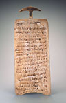
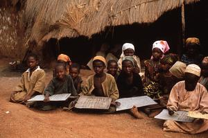
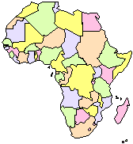
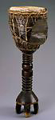

African Literature
This course will examine the realities of contemporary Africa primarily through a study of modern African literature. After examining classic African folklore and literature as a whole class, students working in literature circle groups will have freedom to explore literature and topics related to their interests. Student work will be posted on a new website for teachers seeking to use African literature.
The course will attempt to offer opportunities to connect to and learn from African students, both studying here at WMU and at the Cheikh Anta Diop University in Dakar, Senegal. Students are expected to take advantage of other local and internet resources to immerse themselves in African literature, culture, and issues. The final project will allow significant student creativity and choice.
English 314 will include an extensive on-line discussion, "African-lit," on the WMU Confer. Students are expected to regularly use their firstname.lastname WMU email account.
This course fulfills a General Education requirement for Distribution Area IV: Other Cultures and Civilizations. This course will follow WMU procedures regarding academic honesty. Since the class is discussion-based, attendance is essential. Missing more than three classes will effect the final grade and missing six classes will lead to failing the course.
Dr. Webb's office is 723 Sprau Tower, 387-2605, and his office hours are after class on Monday or Wednesday, by appointment and email at allen.webb@wmich.edu. (Feeling stress? English 314 also offers free on-line therapy from Eliza!)
 Chinua Achebe, Things Fall Apart
Sembene Ouseman, Xala
Gorgui Dieng, A Leap Out of the Dark (see professor $10)
Ngugi wa'Thiongo, Devil on the Cross
Buchi Emecheta, Kehinde
Two or Three additional novels / literary works
|  |
|
|
Electronic Syllabus Sep 1 Wednesday
Sep 8 Wednesday
|
 |
| Sep 13 Monday
Sep 15 Wednesday
|
|
Sep 20 Monday
Sep 22 Wednesday
|
|
Sep 27 Monday
Read: Things Fall Apart, part 1
On-line resources to support reading Things Fall Apart: Study Guide, Reading and Study Questions, Achebe in the Postcolonial Web, Postcolonial Dialogues,Masks on Line, On-line Academic Articles via WMU LibraryAfrica Map Test and Answers; Study for the map test at liketolearn
{kind=link}
{kind=link}
| Sep 29 Wednesday
|
|
| Oct 4 Monday
|
|
| Oct 6 Wednesday
Oct 11 Monday
|
|
Oct 13 Wednesday
Read: Xala, Comments on Xala on the Postcolonial Dialogues, Postcolonial Web
| Oct 18 Monday Read: A Leap Out of the Dark |
|
Oct 20 Wednesday
| Oct 25 Monday
Oct 27 Wednesday
|
 |
Nov 1 Monday
Read: Devil on the Cross, chapters 7-end
Form literature circles
Nov 3 Wednesday
Read: Start Kehinde
Background on Emecheta: An Igbo Woman, Postcolonial Web
Nov 8 Monday
Finish Kehinde
Nov 10 Wednesday
|
|
Nov 15 Monday
| Nov 17 Wednesday |
|
| Nov 22 Monday |
|
| Nov 24 No Class, Thanksgiving Recess |
|
| Nov 29 Monday |
|
|
Dec 1 Wednesday |
|
|
Dec 7 Tuesday 2:45-4:45 African Lit Final
Compare our class with other |
 |
---------------------------------------------
created by: allen.webb@wmich.edu
updated: 9/04